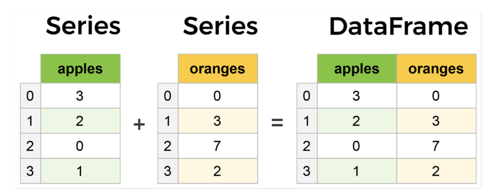

import pandas as pd5 Pandas
5.1 Introduction
The Pandas library contains several methods and functions for cleaning, manipulating and analyzing data. While NumPy is suited for working with homogenous numerical array data, Pandas is designed for working with tabular or heterogenous data.
Pandas is built on top of the NumPy package. Thus, there are some similarities between the two libraries. Like NumPy, Pandas provides the basic mathematical functionalities like addition, subtraction, conditional operations and broadcasting. However, unlike NumPy library which provides objects for multi-dimensional arrays, Pandas provides the 2D table object called Dataframe.
Data in pandas is often used to feed statistical analysis in SciPy, plotting functions from Matplotlib, and machine learning algorithms in Scikit-learn.
Typically, the Pandas library is used for:
- Cleaning the data by tasks such as removing missing values, filtering rows / columns, aggregating data, mutating data, etc.
- Computing summary statistics such as the mean, median, max, min, standard deviation, etc.
- Computing correlation among columns in the data
- Computing the data distribution
- Visualizing the data with help from the Matplotlib library
- Writing the cleaned and transformed data into a CSV file or other database formats
Let’s import the Pandas library to use its methods and functions.
5.2 Pandas data structures - Series and DataFrame
There are two core components of the Pandas library - Series and DataFrame.
A DataFrame is a two-dimensional object - comprising of tabular data organized in rows and columns, where individual columns can be of different value types (numeric / string / boolean etc.). A DataFrame has row labels (also called row indices) which refer to individual rows, and column labels (also called column names) that refer to individual columns. By default, the row indices are integers starting from zero. However, both the row indices and column names can be customized by the user.
Let us read the spotify data - spotify_data.csv, using the Pandas function read_csv().
spotify_data = pd.read_csv('./Datasets/spotify_data.csv')
spotify_data.head()| artist_followers | genres | artist_name | artist_popularity | track_name | track_popularity | duration_ms | explicit | release_year | danceability | ... | key | loudness | mode | speechiness | acousticness | instrumentalness | liveness | valence | tempo | time_signature | |
|---|---|---|---|---|---|---|---|---|---|---|---|---|---|---|---|---|---|---|---|---|---|
| 0 | 16996777 | rap | Juice WRLD | 96 | All Girls Are The Same | 0 | 165820 | 1 | 2021 | 0.673 | ... | 0 | -7.226 | 1 | 0.3060 | 0.0769 | 0.000338 | 0.0856 | 0.203 | 161.991 | 4 |
| 1 | 16996777 | rap | Juice WRLD | 96 | Lucid Dreams | 0 | 239836 | 1 | 2021 | 0.511 | ... | 6 | -7.230 | 0 | 0.2000 | 0.3490 | 0.000000 | 0.3400 | 0.218 | 83.903 | 4 |
| 2 | 16996777 | rap | Juice WRLD | 96 | Hear Me Calling | 0 | 189977 | 1 | 2021 | 0.699 | ... | 7 | -3.997 | 0 | 0.1060 | 0.3080 | 0.000036 | 0.1210 | 0.499 | 88.933 | 4 |
| 3 | 16996777 | rap | Juice WRLD | 96 | Robbery | 0 | 240527 | 1 | 2021 | 0.708 | ... | 2 | -5.181 | 1 | 0.0442 | 0.3480 | 0.000000 | 0.2220 | 0.543 | 79.993 | 4 |
| 4 | 5988689 | rap | Roddy Ricch | 88 | Big Stepper | 0 | 175170 | 0 | 2021 | 0.753 | ... | 8 | -8.469 | 1 | 0.2920 | 0.0477 | 0.000000 | 0.1970 | 0.616 | 76.997 | 4 |
5 rows × 21 columns
The object spotify_data is a pandas DataFrame:
type(spotify_data)pandas.core.frame.DataFrameA Series is a one-dimensional object, containing a sequence of values, where each value has an index. Each column of a DataFrame is Series as shown in the example below.
#Extracting movie titles from the movie_ratings DataFrame
spotify_songs = spotify_data['track_name']
spotify_songs0 All Girls Are The Same
1 Lucid Dreams
2 Hear Me Calling
3 Robbery
4 Big Stepper
...
243185 Stardust
243186 Knockin' A Jug - 78 rpm Version
243187 When It's Sleepy Time Down South
243188 On The Sunny Side Of The Street - Part 2
243189 My Sweet
Name: track_name, Length: 243190, dtype: object#The object movie_titles is a Series
type(spotify_songs)pandas.core.series.SeriesA Series is essentially a column, and a DataFrame is a two-dimensional table made up of a collection of Series

5.3 Creating a Pandas Series / DataFrame
5.3.1 Specifying data within the Series() / DataFrame() functions
A Pandas Series and DataFrame can be created by specifying the data within the Series() / DataFrame() function. Below are examples of defining a Pandas Series / DataFrame.
#Defining a Pandas Series
series_example = pd.Series(['these','are','english','words'])
series_example0 these
1 are
2 english
3 words
dtype: objectNote that the default row indices are integers starting from 0. However, the index can be specified with the index argument if desired by the user:
#Defining a Pandas Series with custom row labels
series_example = pd.Series(['these','are','english','words'], index = range(101,105))
series_example101 these
102 are
103 english
104 words
dtype: object5.3.2 Transforming in-built data structures
A Pandas DataFrame can be created by converting the in-built python data structures such as lists, dictionaries, and list of dictionaries to DataFrame. See the examples below.
#List consisting of expected age to marry of students of the STAT303-1 Fall 2022 class
exp_marriage_age_list=['24','30','28','29','30','27','26','28','30+','26','28','30','30','30','probably never','30','25','25','30','28','30+ ','30','25','28','28','25','25','27','28','30','30','35','26','28','27','27','30','25','30','26','32','27','26','27','26','28','37','28','28','28','35','28','27','28','26','28','26','30','27','30','28','25','26','28','35','29','27','27','30','24','25','29','27','33','30','30','25','26','30','32','26','30','30','I wont','25','27','27','25','27','27','32','26','25','never','28','33','28','35','25','30','29','30','31','28','28','30','40','30','28','30','27','by 30','28','27','28','30-35','35','30','30','never','30','35','28','31','30','27','33','32','27','27','26','N/A','25','26','29','28','34','26','24','28','30','120','25','33','27','28','32','30','26','30','30','28','27','27','27','27','27','27','28','30','30','30','28','30','28','30','30','28','28','30','27','30','28','25','never','69','28','28','33','30','28','28','26','30','26','27','30','25','Never','27','27','25']#Example 1: Creating a Pandas Series from a list
exp_marriage_age_series=pd.Series(exp_marriage_age_list,name = 'expected_marriage_age')
exp_marriage_age_series.head()0 24
1 30
2 28
3 29
4 30
Name: expected_marriage_age, dtype: object#Dictionary consisting of the GDP per capita of the US from 1960 to 2021 with some missing values
GDP_per_capita_dict = {'1960':3007,'1961':3067,'1962':3244,'1963':3375,'1964':3574,'1965':3828,'1966':4146,'1967':4336,'1968':4696,'1970':5234,'1971':5609,'1972':6094,'1973':6726,'1974':7226,'1975':7801,'1976':8592,'1978':10565,'1979':11674, '1980':12575,'1981':13976,'1982':14434,'1983':15544,'1984':17121,'1985':18237, '1986':19071,'1987':20039,'1988':21417,'1989':22857,'1990':23889,'1991':24342, '1992':25419,'1993':26387,'1994':27695,'1995':28691,'1996':29968,'1997':31459, '1998':32854,'2000':36330,'2001':37134,'2002':37998,'2003':39490,'2004':41725, '2005':44123,'2006':46302,'2007':48050,'2008':48570,'2009':47195,'2010':48651, '2011':50066,'2012':51784,'2013':53291,'2015':56763,'2016':57867,'2017':59915,'2018':62805, '2019':65095,'2020':63028,'2021':69288}#Example 2: Creating a Pandas Series from a Dictionary
GDP_per_capita_series = pd.Series(GDP_per_capita_dict)
GDP_per_capita_series.head()1960 3007
1961 3067
1962 3244
1963 3375
1964 3574
dtype: int64#List of dictionary consisting of 52 playing cards of the deck
deck_list_of_dictionaries = [{'value':i, 'suit':c}
for c in ['spades', 'clubs', 'hearts', 'diamonds']
for i in range(2,15)]#Example 3: Creating a Pandas DataFrame from a List of dictionaries
deck_df = pd.DataFrame(deck_list_of_dictionaries)
deck_df.head()| value | suit | |
|---|---|---|
| 0 | 2 | spades |
| 1 | 3 | spades |
| 2 | 4 | spades |
| 3 | 5 | spades |
| 4 | 6 | spades |
5.3.3 Importing data from files
In the real world, a Pandas DataFrame will typically be created by loading the datasets from existing storage such as SQL Database, CSV file, Excel file, text files, HTML files, etc., as we learned in the third chapter of the book on Reading data.
5.4 Attributes and Methods of a Pandas DataFrame
All attributes and methods of a Pandas DataFrame object can be viewed with the python’s built-in dir() function.
#List of attributes and methods of a Pandas DataFrame
#This code is not executed as the list is too long
dir(spotify_data)Although we’ll see examples of attributes and methods of a Pandas DataFrame, please note that most of these attributes and methods are also applicable to the Pandas Series object.
5.4.1 Attributes of a Pandas DataFrame
Some of the attributes of the Pandas DataFrame class are the following.
- dtypes: This attribute is a Series consisting the datatypes of columns of a Pandas DataFrame.
spotify_data.dtypesartist_followers int64
genres object
artist_name object
artist_popularity int64
track_name object
track_popularity int64
duration_ms int64
explicit int64
release_year int64
danceability float64
energy float64
key int64
loudness float64
mode int64
speechiness float64
acousticness float64
instrumentalness float64
liveness float64
valence float64
tempo float64
time_signature int64
dtype: objectThe table below describes the datatypes of columns in a Pandas DataFrame.
| Pandas Type | Native Python Type | Description |
|---|---|---|
| object | string | The most general dtype. This datatype is assigned to a column if the column has mixed types (numbers and strings) |
| int64 | int | This datatype is for integers from -9,223,372,036,854,775,808 to 9,223,372,036,854,775,807 or for integers havind a maximum sizeo of 64 bits |
| float64 | float | This datatype is for real numbers. If a column contains integers and NaNs, Pandas will default to float64. This is because the missing values may be a real number |
| datetime64, timedelta[ns] | N/A (but see the datetime module in Python’s standard library) | Values meant to hold time data. This datatype is useful for time series analysis |
- columns: This attribute consists of the column labels (or column names) of a Pandas DataFrame.
spotify_data.columnsIndex(['artist_followers', 'genres', 'artist_name', 'artist_popularity',
'track_name', 'track_popularity', 'duration_ms', 'explicit',
'release_year', 'danceability', 'energy', 'key', 'loudness', 'mode',
'speechiness', 'acousticness', 'instrumentalness', 'liveness',
'valence', 'tempo', 'time_signature'],
dtype='object')- index: This attribute consists of the row lables (or row indices) of a Pandas DataFrame.
spotify_data.indexRangeIndex(start=0, stop=243190, step=1)- axes: This is a list of length two, where the first element is the row labels, and the second element is the columns labels. In other words, this attribute combines the information in the attributes -
indexandcolumns.
spotify_data.axes[RangeIndex(start=0, stop=243190, step=1),
Index(['artist_followers', 'genres', 'artist_name', 'artist_popularity',
'track_name', 'track_popularity', 'duration_ms', 'explicit',
'release_year', 'danceability', 'energy', 'key', 'loudness', 'mode',
'speechiness', 'acousticness', 'instrumentalness', 'liveness',
'valence', 'tempo', 'time_signature'],
dtype='object')]- ndim in NumPy, this attribute specifies the number of dimensions. However, unlike NumPy, a Pandas DataFrame has a fixed dimenstion of 2, and a Pandas Series has a fixed dimesion of 1.
spotify_data.ndim2- size: This attribute specifies the number of elements in a DataFrame. Its value is the product of the number of rows and columns.
spotify_data.size5106990- shape: This is a tuple consisting of the number of rows and columns in a Pandas DataFrame.
spotify_data.shape(243190, 21)- values: This provides a NumPy representation of a Pandas DataFrame.
spotify_data.valuesarray([[16996777, 'rap', 'Juice WRLD', ..., 0.203, 161.991, 4],
[16996777, 'rap', 'Juice WRLD', ..., 0.218, 83.903, 4],
[16996777, 'rap', 'Juice WRLD', ..., 0.499, 88.933, 4],
...,
[2256652, 'jazz', 'Louis Armstrong', ..., 0.37, 105.093, 4],
[2256652, 'jazz', 'Louis Armstrong', ..., 0.576, 101.279, 4],
[2256652, 'jazz', 'Louis Armstrong', ..., 0.816, 105.84, 4]],
dtype=object)5.4.2 Methods of a Pandas DataFrame
Some of the commonly used methods of the Pandas DataFrame class are the following.
- head(): Prints the first n rows of a DataFrame.
spotify_data.head(2)| artist_followers | genres | artist_name | artist_popularity | track_name | track_popularity | duration_ms | explicit | release_year | danceability | ... | key | loudness | mode | speechiness | acousticness | instrumentalness | liveness | valence | tempo | time_signature | |
|---|---|---|---|---|---|---|---|---|---|---|---|---|---|---|---|---|---|---|---|---|---|
| 0 | 16996777 | rap | Juice WRLD | 96 | All Girls Are The Same | 0 | 165820 | 1 | 2021 | 0.673 | ... | 0 | -7.226 | 1 | 0.306 | 0.0769 | 0.000338 | 0.0856 | 0.203 | 161.991 | 4 |
| 1 | 16996777 | rap | Juice WRLD | 96 | Lucid Dreams | 0 | 239836 | 1 | 2021 | 0.511 | ... | 6 | -7.230 | 0 | 0.200 | 0.3490 | 0.000000 | 0.3400 | 0.218 | 83.903 | 4 |
2 rows × 21 columns
- tail(): Prints the last n rows of a DataFrame.
spotify_data.tail(3)| artist_followers | genres | artist_name | artist_popularity | track_name | track_popularity | duration_ms | explicit | release_year | danceability | ... | key | loudness | mode | speechiness | acousticness | instrumentalness | liveness | valence | tempo | time_signature | |
|---|---|---|---|---|---|---|---|---|---|---|---|---|---|---|---|---|---|---|---|---|---|
| 243187 | 2256652 | jazz | Louis Armstrong | 74 | When It's Sleepy Time Down South | 4 | 200200 | 0 | 1923 | 0.527 | ... | 3 | -14.814 | 1 | 0.0793 | 0.989 | 0.00001 | 0.1040 | 0.370 | 105.093 | 4 |
| 243188 | 2256652 | jazz | Louis Armstrong | 74 | On The Sunny Side Of The Street - Part 2 | 4 | 185973 | 0 | 1923 | 0.559 | ... | 0 | -9.804 | 1 | 0.0512 | 0.989 | 0.84700 | 0.4480 | 0.576 | 101.279 | 4 |
| 243189 | 2256652 | jazz | Louis Armstrong | 74 | My Sweet | 4 | 195960 | 0 | 1923 | 0.741 | ... | 3 | -10.406 | 1 | 0.0505 | 0.927 | 0.07880 | 0.0633 | 0.816 | 105.840 | 4 |
3 rows × 21 columns
- describe(): Print summary statistics of a Pandas DataFrame, as seen in chapter 3 on Reading Data.
spotify_data.describe()| artist_followers | artist_popularity | track_popularity | duration_ms | explicit | release_year | danceability | energy | key | loudness | mode | speechiness | acousticness | instrumentalness | liveness | valence | tempo | time_signature | |
|---|---|---|---|---|---|---|---|---|---|---|---|---|---|---|---|---|---|---|
| count | 2.431900e+05 | 243190.000000 | 243190.000000 | 2.431900e+05 | 243190.000000 | 243190.000000 | 243190.000000 | 243190.000000 | 243190.000000 | 243190.000000 | 243190.000000 | 243190.000000 | 243190.000000 | 243190.000000 | 243190.000000 | 243190.000000 | 243190.000000 | 243190.000000 |
| mean | 1.960931e+06 | 65.342633 | 36.080772 | 2.263209e+05 | 0.050039 | 1992.475258 | 0.568357 | 0.580633 | 5.240326 | -9.432548 | 0.670928 | 0.111984 | 0.383938 | 0.071169 | 0.223756 | 0.552302 | 119.335060 | 3.884177 |
| std | 5.028746e+06 | 10.289182 | 16.476836 | 9.973214e+04 | 0.218026 | 18.481463 | 0.159444 | 0.236631 | 3.532546 | 4.449731 | 0.469877 | 0.198068 | 0.321142 | 0.209555 | 0.198076 | 0.250017 | 29.864219 | 0.458082 |
| min | 2.300000e+01 | 51.000000 | 0.000000 | 3.344000e+03 | 0.000000 | 1923.000000 | 0.000000 | 0.000000 | 0.000000 | -60.000000 | 0.000000 | 0.000000 | 0.000000 | 0.000000 | 0.000000 | 0.000000 | 0.000000 | 0.000000 |
| 25% | 1.832620e+05 | 57.000000 | 25.000000 | 1.776670e+05 | 0.000000 | 1980.000000 | 0.462000 | 0.405000 | 2.000000 | -11.990000 | 0.000000 | 0.033200 | 0.070000 | 0.000000 | 0.098100 | 0.353000 | 96.099250 | 4.000000 |
| 50% | 5.352520e+05 | 64.000000 | 36.000000 | 2.188670e+05 | 0.000000 | 1994.000000 | 0.579000 | 0.591000 | 5.000000 | -8.645000 | 1.000000 | 0.043100 | 0.325000 | 0.000011 | 0.141000 | 0.560000 | 118.002000 | 4.000000 |
| 75% | 1.587332e+06 | 72.000000 | 48.000000 | 2.645465e+05 | 0.000000 | 2008.000000 | 0.685000 | 0.776000 | 8.000000 | -6.131000 | 1.000000 | 0.075300 | 0.671000 | 0.002220 | 0.292000 | 0.760000 | 137.929000 | 4.000000 |
| max | 7.890023e+07 | 100.000000 | 99.000000 | 4.995083e+06 | 1.000000 | 2021.000000 | 0.988000 | 1.000000 | 11.000000 | 3.744000 | 1.000000 | 0.969000 | 0.996000 | 1.000000 | 1.000000 | 1.000000 | 243.507000 | 5.000000 |
- max()/min()`: Returns the max/min values of numeric columns If the function is applied on non-numeric columns, it will return the maximum/minimum value based on the order of the alphabet.
#The max() method applied on a Series
spotify_data['artist_popularity'].max()100#The max() method applied on a DataFrame
spotify_data.max()artist_followers 78900234
genres rock
artist_name 高爾宣 OSN
artist_popularity 100
track_name 행복했던 날들이었다 days gone by
track_popularity 99
duration_ms 4995083
explicit 1
release_year 2021
danceability 0.988
energy 1.0
key 11
loudness 3.744
mode 1
speechiness 0.969
acousticness 0.996
instrumentalness 1.0
liveness 1.0
valence 1.0
tempo 243.507
time_signature 5
dtype: objectspotify_data.median()artist_followers 535252.000000
artist_popularity 64.000000
track_popularity 36.000000
duration_ms 218867.000000
explicit 0.000000
release_year 1994.000000
danceability 0.579000
energy 0.591000
key 5.000000
loudness -8.645000
mode 1.000000
speechiness 0.043100
acousticness 0.325000
instrumentalness 0.000011
liveness 0.141000
valence 0.560000
tempo 118.002000
time_signature 4.000000
dtype: float64- std(): Returns the standard deviation of numeric columns.
spotify_data.std()artist_followers 5.028746e+06
artist_popularity 1.028918e+01
track_popularity 1.647684e+01
duration_ms 9.973214e+04
explicit 2.180260e-01
release_year 1.848146e+01
danceability 1.594436e-01
energy 2.366309e-01
key 3.532546e+00
loudness 4.449731e+00
mode 4.698771e-01
speechiness 1.980684e-01
acousticness 3.211417e-01
instrumentalness 2.095551e-01
liveness 1.980759e-01
valence 2.500172e-01
tempo 2.986422e+01
time_signature 4.580822e-01
dtype: float64- sample(n): Returns n random observations from a Pandas DataFrame.
spotify_data.sample(4)| artist_followers | genres | artist_name | artist_popularity | track_name | track_popularity | duration_ms | explicit | release_year | danceability | ... | key | loudness | mode | speechiness | acousticness | instrumentalness | liveness | valence | tempo | time_signature | |
|---|---|---|---|---|---|---|---|---|---|---|---|---|---|---|---|---|---|---|---|---|---|
| 42809 | 385756 | rock | Saxon | 56 | Never Surrender - 2009 Remastered Version | 2 | 195933 | 0 | 2012 | 0.506 | ... | 6 | -7.847 | 1 | 0.0633 | 0.0535 | 0.00001 | 0.3330 | 0.536 | 90.989 | 4 |
| 25730 | 810526 | hip hop | Froid | 68 | Pseudosocial | 54 | 135963 | 0 | 2016 | 0.644 | ... | 7 | -9.098 | 0 | 0.3280 | 0.8270 | 0.00001 | 0.1630 | 0.886 | 117.170 | 4 |
| 147392 | 479209 | jazz | Sarah Vaughan | 59 | Love Dance | 14 | 204400 | 0 | 1982 | 0.386 | ... | 0 | -23.819 | 1 | 0.0372 | 0.8970 | 0.00000 | 0.0943 | 0.102 | 110.981 | 3 |
| 233189 | 1201905 | rock | Grateful Dead | 72 | Cold Rain and Snow - 2013 Remaster | 29 | 151702 | 0 | 1967 | 0.412 | ... | 6 | -10.476 | 0 | 0.0487 | 0.4090 | 0.58300 | 0.1630 | 0.875 | 168.803 | 4 |
4 rows × 21 columns
- dropna(): Drops all observations with at least one missing value.
#This code is not executed to avoid prining a large table
spotify_data.dropna()- apply(): This method is used to apply a function over all columns or rows of a Pandas DataFrame. For example, let us find the range of values of
artist_followers,artist_popularityandrelease_year.
#Defining the function to compute range of values of a columns
def range_of_values(x):
return x.max()-x.min()
#Applying the function to three coluumns for which we wish to find the range of values
spotify_data[['artist_followers','artist_popularity','release_year']].apply(range_of_values, axis=0)artist_followers 78900211
artist_popularity 49
release_year 98
dtype: int64The apply() method is often used with the one line function known as lambda function in python. These functions do not require a name, and can be defined using the keyword lambda. The above block of code can be concisely written as:
spotify_data[['artist_followers','artist_popularity','release_year']].apply(lambda x:x.max()-x.min(), axis=0)artist_followers 78900211
artist_popularity 49
release_year 98
dtype: int64- map(): The function is used to map distinct values of a Pandas Series to another set of corresponding values.
For example, suppose we wish to create a new column in the spotify dataset which indicates the modality of the song - major (mode = 1) or minor (mode = 0). We’ll map the values of the mode column to the categories major and minor:
#Creating a dictionary that maps the values 0 and 1 to minor and major respectively
map_mode = {0:'minor', 1:'major'}
#The map() function requires a dictionary object, and maps the 'values' of the 'keys' in the dictionary
spotify_data['modality'] = spotify_data['mode'].map(map_mode)We can see the variable modality in the updated DataFrame.
spotify_data.head()| artist_followers | genres | artist_name | artist_popularity | track_name | track_popularity | duration_ms | explicit | release_year | danceability | ... | loudness | mode | speechiness | acousticness | instrumentalness | liveness | valence | tempo | time_signature | modality | |
|---|---|---|---|---|---|---|---|---|---|---|---|---|---|---|---|---|---|---|---|---|---|
| 0 | 16996777 | rap | Juice WRLD | 96 | All Girls Are The Same | 0 | 165820 | 1 | 2021 | 0.673 | ... | -7.226 | 1 | 0.3060 | 0.0769 | 0.000338 | 0.0856 | 0.203 | 161.991 | 4 | major |
| 1 | 16996777 | rap | Juice WRLD | 96 | Lucid Dreams | 0 | 239836 | 1 | 2021 | 0.511 | ... | -7.230 | 0 | 0.2000 | 0.3490 | 0.000000 | 0.3400 | 0.218 | 83.903 | 4 | minor |
| 2 | 16996777 | rap | Juice WRLD | 96 | Hear Me Calling | 0 | 189977 | 1 | 2021 | 0.699 | ... | -3.997 | 0 | 0.1060 | 0.3080 | 0.000036 | 0.1210 | 0.499 | 88.933 | 4 | minor |
| 3 | 16996777 | rap | Juice WRLD | 96 | Robbery | 0 | 240527 | 1 | 2021 | 0.708 | ... | -5.181 | 1 | 0.0442 | 0.3480 | 0.000000 | 0.2220 | 0.543 | 79.993 | 4 | major |
| 4 | 5988689 | rap | Roddy Ricch | 88 | Big Stepper | 0 | 175170 | 0 | 2021 | 0.753 | ... | -8.469 | 1 | 0.2920 | 0.0477 | 0.000000 | 0.1970 | 0.616 | 76.997 | 4 | major |
5 rows × 22 columns
- drop(): This function is used to drop rows/columns from a DataFrame.
For example, let us drop the columns mode from the spotify dataset:
#Dropping the column 'mode'
spotify_data_new = spotify_data.drop('mode',axis=1)
spotify_data_new.head()| artist_followers | genres | artist_name | artist_popularity | track_name | track_popularity | duration_ms | explicit | release_year | danceability | ... | key | loudness | speechiness | acousticness | instrumentalness | liveness | valence | tempo | time_signature | modality | |
|---|---|---|---|---|---|---|---|---|---|---|---|---|---|---|---|---|---|---|---|---|---|
| 0 | 16996777 | rap | Juice WRLD | 96 | All Girls Are The Same | 0 | 165820 | 1 | 2021 | 0.673 | ... | 0 | -7.226 | 0.3060 | 0.0769 | 0.000338 | 0.0856 | 0.203 | 161.991 | 4 | major |
| 1 | 16996777 | rap | Juice WRLD | 96 | Lucid Dreams | 0 | 239836 | 1 | 2021 | 0.511 | ... | 6 | -7.230 | 0.2000 | 0.3490 | 0.000000 | 0.3400 | 0.218 | 83.903 | 4 | minor |
| 2 | 16996777 | rap | Juice WRLD | 96 | Hear Me Calling | 0 | 189977 | 1 | 2021 | 0.699 | ... | 7 | -3.997 | 0.1060 | 0.3080 | 0.000036 | 0.1210 | 0.499 | 88.933 | 4 | minor |
| 3 | 16996777 | rap | Juice WRLD | 96 | Robbery | 0 | 240527 | 1 | 2021 | 0.708 | ... | 2 | -5.181 | 0.0442 | 0.3480 | 0.000000 | 0.2220 | 0.543 | 79.993 | 4 | major |
| 4 | 5988689 | rap | Roddy Ricch | 88 | Big Stepper | 0 | 175170 | 0 | 2021 | 0.753 | ... | 8 | -8.469 | 0.2920 | 0.0477 | 0.000000 | 0.1970 | 0.616 | 76.997 | 4 | major |
5 rows × 21 columns
Note that if multiple columns or rows are to be dropped, they must be enclosed in box brackets.
- unique(): This functions provides the unique values of a Series. For example, let us find the number of unique genres of songs in the spotify dataset:
spotify_data.genres.unique()array(['rap', 'pop', 'miscellaneous', 'metal', 'hip hop', 'rock',
'pop & rock', 'hoerspiel', 'folk', 'electronic', 'jazz', 'country',
'latin'], dtype=object)- value_counts() This function provides the number of observations of each value of a Series. For example, let us find the number of songs of each genre in the spotify dataset:
spotify_data.genres.value_counts()pop 70441
rock 49785
pop & rock 43437
miscellaneous 35848
jazz 13363
hoerspiel 12514
hip hop 7373
folk 2821
latin 2125
rap 1798
metal 1659
country 1236
electronic 790
Name: genres, dtype: int64More than half the songs in the dataset are pop, rock or pop & rock.
- isin(): This function provides a boolean Series indicating the position of certain values in a Series. The function is helpful in sub-setting data. For example, let us subset the songs that are either latin, rap, or metal:
latin_rap_metal_songs = spotify_data.loc[spotify_data.genres.isin(['latin','rap','metal']),:]
latin_rap_metal_songs.head()| artist_followers | genres | artist_name | artist_popularity | track_name | track_popularity | duration_ms | explicit | release_year | danceability | ... | key | loudness | mode | speechiness | acousticness | instrumentalness | liveness | valence | tempo | time_signature | |
|---|---|---|---|---|---|---|---|---|---|---|---|---|---|---|---|---|---|---|---|---|---|
| 0 | 16996777 | rap | Juice WRLD | 96 | All Girls Are The Same | 0 | 165820 | 1 | 2021 | 0.673 | ... | 0 | -7.226 | 1 | 0.3060 | 0.0769 | 0.000338 | 0.0856 | 0.203 | 161.991 | 4 |
| 1 | 16996777 | rap | Juice WRLD | 96 | Lucid Dreams | 0 | 239836 | 1 | 2021 | 0.511 | ... | 6 | -7.230 | 0 | 0.2000 | 0.3490 | 0.000000 | 0.3400 | 0.218 | 83.903 | 4 |
| 2 | 16996777 | rap | Juice WRLD | 96 | Hear Me Calling | 0 | 189977 | 1 | 2021 | 0.699 | ... | 7 | -3.997 | 0 | 0.1060 | 0.3080 | 0.000036 | 0.1210 | 0.499 | 88.933 | 4 |
| 3 | 16996777 | rap | Juice WRLD | 96 | Robbery | 0 | 240527 | 1 | 2021 | 0.708 | ... | 2 | -5.181 | 1 | 0.0442 | 0.3480 | 0.000000 | 0.2220 | 0.543 | 79.993 | 4 |
| 4 | 5988689 | rap | Roddy Ricch | 88 | Big Stepper | 0 | 175170 | 0 | 2021 | 0.753 | ... | 8 | -8.469 | 1 | 0.2920 | 0.0477 | 0.000000 | 0.1970 | 0.616 | 76.997 | 4 |
5 rows × 21 columns
5.5 Data manipulations with Pandas
5.5.1 Sub-setting data
5.5.1.1 loc and iloc with the original row / column index
Subsetting observations: In the chapter on reading data, we learned about operators loc and iloc that can be used to subset data based on axis labels and position of rows/columns respectively. However, usually we are not aware of the relevant row indices, and we may want to subset data based on some condition(s). For example, suppose we wish to analyze only those songs whose track popularity is higher than 50.
Q: Do we need to subset rows or columns in this case?
A: Rows, as songs correspond to rows, while features of songs correspond to columns.
As we need to subset rows, the filter must be applied at the starting index, i.e., the index before the ,. As we don’t need to subset any specific features of the songs, there is no subsetting to be done on the columns. A : at the ending index means that all columns need to selected.
#Subsetting spotify songs that have track popularity score of more than 50
popular_songs = spotify_data.loc[spotify_data.track_popularity>=50,:]
popular_songs.head()| artist_followers | genres | artist_name | artist_popularity | track_name | track_popularity | duration_ms | explicit | release_year | danceability | ... | key | loudness | mode | speechiness | acousticness | instrumentalness | liveness | valence | tempo | time_signature | |
|---|---|---|---|---|---|---|---|---|---|---|---|---|---|---|---|---|---|---|---|---|---|
| 181 | 1277325 | hip hop | Dave | 77 | Titanium | 69 | 127750 | 1 | 2021 | 0.959 | ... | 0 | -8.687 | 0 | 0.4370 | 0.152000 | 0.000001 | 0.1050 | 0.510 | 121.008 | 4 |
| 191 | 1123869 | rap | Jay Wheeler | 85 | Viendo el Techo | 64 | 188955 | 0 | 2021 | 0.741 | ... | 11 | -6.029 | 0 | 0.2290 | 0.306000 | 0.000327 | 0.1000 | 0.265 | 179.972 | 4 |
| 208 | 3657199 | rap | Polo G | 91 | RAPSTAR | 89 | 165926 | 1 | 2021 | 0.789 | ... | 6 | -6.862 | 1 | 0.2420 | 0.410000 | 0.000000 | 0.1290 | 0.437 | 81.039 | 4 |
| 263 | 1461700 | pop & rock | Teoman | 67 | Gecenin Sonuna Yolculuk | 52 | 280600 | 0 | 2021 | 0.686 | ... | 11 | -7.457 | 0 | 0.0268 | 0.119000 | 0.000386 | 0.1080 | 0.560 | 100.932 | 4 |
| 293 | 299746 | pop & rock | Lars Winnerbäck | 62 | Själ och hjärta | 55 | 271675 | 0 | 2021 | 0.492 | ... | 2 | -6.005 | 0 | 0.0349 | 0.000735 | 0.000207 | 0.0953 | 0.603 | 142.042 | 4 |
5 rows × 21 columns
Subsetting columns: Suppose we wish to analyze only track_name, release year and track_popularity of songs. Then, we can subset the revelant columns:
relevant_columns = spotify_data.loc[:,['track_name','release_year','track_popularity']]
relevant_columns.head()| track_name | release_year | track_popularity | |
|---|---|---|---|
| 0 | All Girls Are The Same | 2021 | 0 |
| 1 | Lucid Dreams | 2021 | 0 |
| 2 | Hear Me Calling | 2021 | 0 |
| 3 | Robbery | 2021 | 0 |
| 4 | Big Stepper | 2021 | 0 |
Note that one multiple columns are subset with loc they are enclosed in a box bracket, unlike the case with a single column. Similarly if multiple observations are selected using the row labels, the row labels must be enclosed in box brackets.
5.5.1.2 Re-indexing rows followed by loc / iloc
Suppose we wish to subset data based on the genres. If we want to subset hiphop songs, we may subset as:
#Subsetting hiphop songs
hiphop_songs = spotify_data.loc[spotify_data['genres']=='hip hop',:]
hiphop_songs.head()| artist_followers | genres | artist_name | artist_popularity | track_name | track_popularity | duration_ms | explicit | release_year | danceability | ... | key | loudness | mode | speechiness | acousticness | instrumentalness | liveness | valence | tempo | time_signature | |
|---|---|---|---|---|---|---|---|---|---|---|---|---|---|---|---|---|---|---|---|---|---|
| 64 | 6485079 | hip hop | DaBaby | 93 | FIND MY WAY | 0 | 139890 | 1 | 2021 | 0.836 | ... | 4 | -6.750 | 0 | 0.1840 | 0.1870 | 0.00000 | 0.1380 | 0.7000 | 103.000 | 4 |
| 80 | 22831280 | hip hop | Daddy Yankee | 91 | Hula Hoop | 0 | 236493 | 0 | 2021 | 0.799 | ... | 6 | -4.628 | 1 | 0.0801 | 0.1130 | 0.00315 | 0.0942 | 0.9510 | 175.998 | 4 |
| 81 | 22831280 | hip hop | Daddy Yankee | 91 | Gasolina - Live | 0 | 306720 | 0 | 2021 | 0.669 | ... | 1 | -4.251 | 1 | 0.2700 | 0.1530 | 0.00000 | 0.1540 | 0.0814 | 96.007 | 4 |
| 87 | 22831280 | hip hop | Daddy Yankee | 91 | La Nueva Y La Ex | 0 | 197053 | 0 | 2021 | 0.639 | ... | 5 | -3.542 | 1 | 0.1360 | 0.0462 | 0.00000 | 0.1410 | 0.6390 | 198.051 | 4 |
| 88 | 22831280 | hip hop | Daddy Yankee | 91 | Que Tire Pa Lante | 0 | 210520 | 0 | 2021 | 0.659 | ... | 7 | -2.814 | 1 | 0.0358 | 0.0478 | 0.00000 | 0.1480 | 0.7040 | 93.979 | 4 |
5 rows × 21 columns
However, if we need to subset data by genres frequently in our analysis, and we don’t need the current row labels, we may replace the row labels as genres to shorten the code for filtering the observations based on genres.
We use the set_index() function to re-index the rows based on existing column(s) of the DataFrame.
#Defining row labels as the values of the column `genres`
spotify_data_reindexed = spotify_data.set_index(keys=spotify_data['genres'])
spotify_data_reindexed.head()| artist_followers | genres | artist_name | artist_popularity | track_name | track_popularity | duration_ms | explicit | release_year | danceability | ... | key | loudness | mode | speechiness | acousticness | instrumentalness | liveness | valence | tempo | time_signature | |
|---|---|---|---|---|---|---|---|---|---|---|---|---|---|---|---|---|---|---|---|---|---|
| genres | |||||||||||||||||||||
| rap | 16996777 | rap | Juice WRLD | 96 | All Girls Are The Same | 0 | 165820 | 1 | 2021 | 0.673 | ... | 0 | -7.226 | 1 | 0.3060 | 0.0769 | 0.000338 | 0.0856 | 0.203 | 161.991 | 4 |
| rap | 16996777 | rap | Juice WRLD | 96 | Lucid Dreams | 0 | 239836 | 1 | 2021 | 0.511 | ... | 6 | -7.230 | 0 | 0.2000 | 0.3490 | 0.000000 | 0.3400 | 0.218 | 83.903 | 4 |
| rap | 16996777 | rap | Juice WRLD | 96 | Hear Me Calling | 0 | 189977 | 1 | 2021 | 0.699 | ... | 7 | -3.997 | 0 | 0.1060 | 0.3080 | 0.000036 | 0.1210 | 0.499 | 88.933 | 4 |
| rap | 16996777 | rap | Juice WRLD | 96 | Robbery | 0 | 240527 | 1 | 2021 | 0.708 | ... | 2 | -5.181 | 1 | 0.0442 | 0.3480 | 0.000000 | 0.2220 | 0.543 | 79.993 | 4 |
| rap | 5988689 | rap | Roddy Ricch | 88 | Big Stepper | 0 | 175170 | 0 | 2021 | 0.753 | ... | 8 | -8.469 | 1 | 0.2920 | 0.0477 | 0.000000 | 0.1970 | 0.616 | 76.997 | 4 |
5 rows × 21 columns
Now, we can subset hiphop songs using the row label of the data:
#Subsetting hiphop songs using row labels
hiphop_songs = spotify_data_reindexed.loc['hip hop',:]
hiphop_songs.head()| artist_followers | genres | artist_name | artist_popularity | track_name | track_popularity | duration_ms | explicit | release_year | danceability | ... | key | loudness | mode | speechiness | acousticness | instrumentalness | liveness | valence | tempo | time_signature | |
|---|---|---|---|---|---|---|---|---|---|---|---|---|---|---|---|---|---|---|---|---|---|
| genres | |||||||||||||||||||||
| hip hop | 6485079 | hip hop | DaBaby | 93 | FIND MY WAY | 0 | 139890 | 1 | 2021 | 0.836 | ... | 4 | -6.750 | 0 | 0.1840 | 0.1870 | 0.00000 | 0.1380 | 0.7000 | 103.000 | 4 |
| hip hop | 22831280 | hip hop | Daddy Yankee | 91 | Hula Hoop | 0 | 236493 | 0 | 2021 | 0.799 | ... | 6 | -4.628 | 1 | 0.0801 | 0.1130 | 0.00315 | 0.0942 | 0.9510 | 175.998 | 4 |
| hip hop | 22831280 | hip hop | Daddy Yankee | 91 | Gasolina - Live | 0 | 306720 | 0 | 2021 | 0.669 | ... | 1 | -4.251 | 1 | 0.2700 | 0.1530 | 0.00000 | 0.1540 | 0.0814 | 96.007 | 4 |
| hip hop | 22831280 | hip hop | Daddy Yankee | 91 | La Nueva Y La Ex | 0 | 197053 | 0 | 2021 | 0.639 | ... | 5 | -3.542 | 1 | 0.1360 | 0.0462 | 0.00000 | 0.1410 | 0.6390 | 198.051 | 4 |
| hip hop | 22831280 | hip hop | Daddy Yankee | 91 | Que Tire Pa Lante | 0 | 210520 | 0 | 2021 | 0.659 | ... | 7 | -2.814 | 1 | 0.0358 | 0.0478 | 0.00000 | 0.1480 | 0.7040 | 93.979 | 4 |
5 rows × 21 columns
5.5.2 Sorting data
Sorting dataset is a very common operation. The sort_values() function of Pandas can be used to sort a Pandas DataFrame or Series. Let us sort the spotify data in decreasing order of track_popularity:
spotify_sorted = spotify_data.sort_values(by = 'track_popularity', ascending = False)
spotify_sorted.head()| artist_followers | genres | artist_name | artist_popularity | track_name | track_popularity | duration_ms | explicit | release_year | danceability | ... | loudness | mode | speechiness | acousticness | instrumentalness | liveness | valence | tempo | time_signature | modality | |
|---|---|---|---|---|---|---|---|---|---|---|---|---|---|---|---|---|---|---|---|---|---|
| 2398 | 1444702 | pop | Olivia Rodrigo | 88 | drivers license | 99 | 242014 | 1 | 2021 | 0.585 | ... | -8.761 | 1 | 0.0601 | 0.72100 | 0.000013 | 0.1050 | 0.132 | 143.874 | 4 | major |
| 2442 | 177401 | hip hop | Masked Wolf | 85 | Astronaut In The Ocean | 98 | 132780 | 0 | 2021 | 0.778 | ... | -6.865 | 0 | 0.0913 | 0.17500 | 0.000000 | 0.1500 | 0.472 | 149.996 | 4 | minor |
| 3133 | 1698014 | pop | Kali Uchis | 88 | telepatía | 97 | 160191 | 0 | 2020 | 0.653 | ... | -9.016 | 0 | 0.0502 | 0.11200 | 0.000000 | 0.2030 | 0.553 | 83.970 | 4 | minor |
| 6702 | 31308207 | pop | The Weeknd | 96 | Save Your Tears | 97 | 215627 | 1 | 2020 | 0.680 | ... | -5.487 | 1 | 0.0309 | 0.02120 | 0.000012 | 0.5430 | 0.644 | 118.051 | 4 | major |
| 6703 | 31308207 | pop | The Weeknd | 96 | Blinding Lights | 96 | 200040 | 0 | 2020 | 0.514 | ... | -5.934 | 1 | 0.0598 | 0.00146 | 0.000095 | 0.0897 | 0.334 | 171.005 | 4 | major |
5 rows × 22 columns
Drivers license is the most popular song!
5.5.3 Ranking data
With the rank() function, we can rank the observations.
For example, let us add a new column to the spotify data that provides the rank of the track_poularity column:
spotify_ranked = spotify_data.copy()
spotify_ranked['track_poularity_rank']=spotify_sorted['track_popularity'].rank()
spotify_ranked.head()| artist_followers | genres | artist_name | artist_popularity | track_name | track_popularity | duration_ms | explicit | release_year | danceability | ... | mode | speechiness | acousticness | instrumentalness | liveness | valence | tempo | time_signature | modality | track_poularity_rank | |
|---|---|---|---|---|---|---|---|---|---|---|---|---|---|---|---|---|---|---|---|---|---|
| 0 | 16996777 | rap | Juice WRLD | 96 | All Girls Are The Same | 0 | 165820 | 1 | 2021 | 0.673 | ... | 1 | 0.3060 | 0.0769 | 0.000338 | 0.0856 | 0.203 | 161.991 | 4 | major | 963.5 |
| 1 | 16996777 | rap | Juice WRLD | 96 | Lucid Dreams | 0 | 239836 | 1 | 2021 | 0.511 | ... | 0 | 0.2000 | 0.3490 | 0.000000 | 0.3400 | 0.218 | 83.903 | 4 | minor | 963.5 |
| 2 | 16996777 | rap | Juice WRLD | 96 | Hear Me Calling | 0 | 189977 | 1 | 2021 | 0.699 | ... | 0 | 0.1060 | 0.3080 | 0.000036 | 0.1210 | 0.499 | 88.933 | 4 | minor | 963.5 |
| 3 | 16996777 | rap | Juice WRLD | 96 | Robbery | 0 | 240527 | 1 | 2021 | 0.708 | ... | 1 | 0.0442 | 0.3480 | 0.000000 | 0.2220 | 0.543 | 79.993 | 4 | major | 963.5 |
| 4 | 5988689 | rap | Roddy Ricch | 88 | Big Stepper | 0 | 175170 | 0 | 2021 | 0.753 | ... | 1 | 0.2920 | 0.0477 | 0.000000 | 0.1970 | 0.616 | 76.997 | 4 | major | 963.5 |
5 rows × 23 columns
Note the column track_popularity_rank. Why does it contain floating point numbers? Check the rank() documentation to find out!
5.5.4 Practice exercise 1
5.5.4.1
Read the file STAT303-1 survey for data analysis.csv.
survey_data = pd.read_csv('./Datasets/STAT303-1 survey for data analysis.csv')5.5.4.2
How many observations and variables are there in the data?
print("The data has ",survey_data.shape[0],"observations, and", survey_data.shape[1], "columns")The data has 192 observations, and 51 columns5.5.4.3
Rename all the columns of the data, except the first two columns, with the shorter names in the list new_col_names given below. The order of column names in the list is the same as the order in which the columns are to be renamed starting with the third column from the left.
new_col_names = ['parties_per_month', 'do_you_smoke', 'weed', 'are_you_an_introvert_or_extrovert', 'love_first_sight', 'learning_style', 'left_right_brained', 'personality_type', 'social_media', 'num_insta_followers', 'streaming_platforms', 'expected_marriage_age', 'expected_starting_salary', 'fav_sport', 'minutes_ex_per_week', 'sleep_hours_per_day', 'how_happy', 'farthest_distance_travelled', 'fav_number', 'fav_letter', 'internet_hours_per_day', 'only_child', 'birthdate_odd_even', 'birth_month', 'fav_season', 'living_location_on_campus', 'major', 'num_majors_minors', 'high_school_GPA', 'NU_GPA', 'age', 'height', 'height_father', 'height_mother', 'school_year', 'procrastinator', 'num_clubs', 'student_athlete', 'AP_stats', 'used_python_before', 'dominant_hand', 'childhood_in_US', 'gender', 'region_of_residence', 'political_affliation', 'cant_change_math_ability', 'can_change_math_ability', 'math_is_genetic', 'much_effort_is_lack_of_talent']survey_data.columns = list(survey_data.columns[0:2])+new_col_names5.5.4.4
Rename the following columns again:
Rename
do_you_smoketosmoke.Rename
are_you_an_introvert_or_extroverttointrovert_extrovert.
Hint: Use the function rename()
survey_data.rename(columns={'do_you_smoke':'smoke','are_you_an_introvert_or_extrovert':'introvert_extrovert'},inplace=True)5.5.4.5
Find the proportion of people going to more than 4 parties per month. Use the variable parties_per_month.
survey_data['parties_per_month']=pd.to_numeric(survey_data.parties_per_month,errors='coerce')
survey_data.loc[survey_data['parties_per_month']>4,:].shape[0]/survey_data.shape[0]0.33854166666666675.5.4.6
Among the people who go to more than 4 parties a month, what proportion of them are introverts?
survey_data.loc[((survey_data['parties_per_month']>4) & (survey_data.introvert_extrovert=='Introvert')),:].shape[0]/survey_data.loc[survey_data['parties_per_month']>4,:].shape[0]0.50769230769230775.5.4.7
Find the proportion of people in each category of the variable how_happy.
survey_data.how_happy.value_counts()/survey_data.shape[0]Pretty happy 0.703125
Very happy 0.151042
Not too happy 0.088542
Don't know 0.057292
Name: how_happy, dtype: float645.5.4.8
Among the people who go to more than 4 parties a month, what proportion of them are either Pretty happy or Very happy?
survey_data.loc[((survey_data['parties_per_month']>4) & (survey_data.how_happy.isin(['Pretty happy','Very happy'])))].shape[0]/survey_data.loc[survey_data['parties_per_month']>4,:].shape[0]0.90769230769230775.5.4.9
Examine the column num_insta_followers. Some numbers in the column contain a comma(,) or a tilde(~). Remove both these characters from the numbers in the column.
Hint: You may use the function str.replace() of the Pandas Series class.
survey_data_insta = survey_data.copy()
survey_data_insta['num_insta_followers']=survey_data_insta['num_insta_followers'].str.replace(',','')
survey_data_insta['num_insta_followers']=survey_data_insta['num_insta_followers'].str.replace('~','')5.5.4.10
Convert the column num_insta_followers to numeric. Coerce the errors.
survey_data_insta.num_insta_followers = pd.to_numeric(survey_data_insta.num_insta_followers,errors='coerce')5.5.4.11
Drop the observations consisting of missing values for num_insta_followers. Report the number of observations dropped.
survey_data.num_insta_followers.isna().sum()35.5.4.12
What is the mean internet_hours_per_day for the top 45 people with the most instagram followers?
survey_data_insta.sort_values(by = 'num_insta_followers',ascending=False, inplace=True)
top_insta = survey_data_insta.iloc[:46,:]
top_insta.internet_hours_per_day = pd.to_numeric(top_insta.internet_hours_per_day,errors = 'coerce')
top_insta.internet_hours_per_day.mean()5.0888888888888895.5.4.13
What is the mean internet_hours_per_day for the remaining people?
low_insta = survey_data_insta.iloc[46:,:]
low_insta.internet_hours_per_day = pd.to_numeric(low_insta.internet_hours_per_day,errors = 'coerce')
low_insta.internet_hours_per_day.mean()13.1188811188811185.6 Operations between DataFrame and Series
Let us learn arithematic operations between DataFrame and Series with the help of an example.
Example: Spotify recommends songs based on songs listened by the user. Suppose you have listened to the song drivers license. Spotify intends to recommend you 5 songs that are similar to drivers license. Which songs should it recommend?
Let us see what information do we have about songs that can help us identify songs similar to drivers license. The columns attribute of DataFrame will display all the columns names. The description of some of the column names relating to audio features is here.
spotify_data.columnsIndex(['artist_followers', 'genres', 'artist_name', 'artist_popularity',
'track_name', 'track_popularity', 'duration_ms', 'explicit',
'release_year', 'danceability', 'energy', 'key', 'loudness', 'mode',
'speechiness', 'acousticness', 'instrumentalness', 'liveness',
'valence', 'tempo', 'time_signature'],
dtype='object')Solution approach: We have several features of a song. Let us find songs similar to drivers license in terms of danceability, energy, key, loudness, mode, speechiness, acousticness, instrumentalness, liveness, valence, time_signature and tempo. Note that we are considering only audio features for simplicity.
To find the songs most similar to drivers license, we need to define a measure that quantifies the similarity. Let us define similarity of a song with drivers license as the Euclidean distance of the song from drivers license, where the coordinates of a song are: (danceability, energy, key, loudness, mode, speechiness, acousticness, instrumentalness, liveness, valence, time_signature, tempo). Thus, similarity can be formulated as:
\[Similarity_{DL-S} = \sqrt{(danceability_{DL}-danceability_{S})^2+(energy_{DL}-energy_{S})^2 +...+ (tempo_{DL}-tempo_{S})^2)},\]
where the subscript DL stands for drivers license and S stands for any song. The top 5 songs with the least value of \(Similarity_{DL-S}\) will be the most similar to drivers lincense and should be recommended.
Let us subset the columns that we need to use to compute the Euclidean distance.
audio_features = spotify_data[['danceability', 'energy', 'key', 'loudness','mode','speechiness',
'acousticness', 'instrumentalness', 'liveness','valence', 'tempo', 'time_signature']]audio_features.head()| danceability | energy | key | loudness | mode | speechiness | acousticness | instrumentalness | liveness | valence | tempo | time_signature | |
|---|---|---|---|---|---|---|---|---|---|---|---|---|
| 0 | 0.673 | 0.529 | 0 | -7.226 | 1 | 0.3060 | 0.0769 | 0.000338 | 0.0856 | 0.203 | 161.991 | 4 |
| 1 | 0.511 | 0.566 | 6 | -7.230 | 0 | 0.2000 | 0.3490 | 0.000000 | 0.3400 | 0.218 | 83.903 | 4 |
| 2 | 0.699 | 0.687 | 7 | -3.997 | 0 | 0.1060 | 0.3080 | 0.000036 | 0.1210 | 0.499 | 88.933 | 4 |
| 3 | 0.708 | 0.690 | 2 | -5.181 | 1 | 0.0442 | 0.3480 | 0.000000 | 0.2220 | 0.543 | 79.993 | 4 |
| 4 | 0.753 | 0.597 | 8 | -8.469 | 1 | 0.2920 | 0.0477 | 0.000000 | 0.1970 | 0.616 | 76.997 | 4 |
#Distribution of values of audio_features
audio_features.describe()| danceability | energy | key | loudness | mode | speechiness | acousticness | instrumentalness | liveness | valence | tempo | time_signature | |
|---|---|---|---|---|---|---|---|---|---|---|---|---|
| count | 243190.000000 | 243190.000000 | 243190.000000 | 243190.000000 | 243190.000000 | 243190.000000 | 243190.000000 | 243190.000000 | 243190.000000 | 243190.000000 | 243190.000000 | 243190.000000 |
| mean | 0.568357 | 0.580633 | 5.240326 | -9.432548 | 0.670928 | 0.111984 | 0.383938 | 0.071169 | 0.223756 | 0.552302 | 119.335060 | 3.884177 |
| std | 0.159444 | 0.236631 | 3.532546 | 4.449731 | 0.469877 | 0.198068 | 0.321142 | 0.209555 | 0.198076 | 0.250017 | 29.864219 | 0.458082 |
| min | 0.000000 | 0.000000 | 0.000000 | -60.000000 | 0.000000 | 0.000000 | 0.000000 | 0.000000 | 0.000000 | 0.000000 | 0.000000 | 0.000000 |
| 25% | 0.462000 | 0.405000 | 2.000000 | -11.990000 | 0.000000 | 0.033200 | 0.070000 | 0.000000 | 0.098100 | 0.353000 | 96.099250 | 4.000000 |
| 50% | 0.579000 | 0.591000 | 5.000000 | -8.645000 | 1.000000 | 0.043100 | 0.325000 | 0.000011 | 0.141000 | 0.560000 | 118.002000 | 4.000000 |
| 75% | 0.685000 | 0.776000 | 8.000000 | -6.131000 | 1.000000 | 0.075300 | 0.671000 | 0.002220 | 0.292000 | 0.760000 | 137.929000 | 4.000000 |
| max | 0.988000 | 1.000000 | 11.000000 | 3.744000 | 1.000000 | 0.969000 | 0.996000 | 1.000000 | 1.000000 | 1.000000 | 243.507000 | 5.000000 |
Note that the audio features differ in terms of scale. Some features like key have a wide range of [0,11], while others like danceability have a very narrow range of [0,0.988]. If we use them directly, features like danceability will have a much higher influence on \(Similarity_{DL-S}\) as compared to features like key. Assuming we wish all the features to have equal weight in quantifying a song’s similarity to drivers license, we should scale the features, so that their values are comparable.
Let us scale the value of each column to a standard uniform distribution: \(U[0,1]\).
For scaling the values of a column to \(U[0,1]\), we need to subtract the minimum value of the column from each value, and divide by the range of values of the column. For example, danceability can be standardized as follows:
#Scaling danceability to U[0,1]
danceability_value_range = audio_features.danceability.max()-audio_features.danceability.min()
danceability_std = (audio_features.danceability-audio_features.danceability.min())/danceability_value_range
danceability_std0 0.681174
1 0.517206
2 0.707490
3 0.716599
4 0.762146
...
243185 0.621457
243186 0.797571
243187 0.533401
243188 0.565789
243189 0.750000
Name: danceability, Length: 243190, dtype: float64However, it will be cumbersome to repeat the above code for each audio feature. We can instead write a function that scales values of a column to \(U[0,1]\), and apply the function on all the audio features.
#Function to scale a column to U[0,1]
def scale_uniform(x):
return (x-x.min())/(x.max()-x.min())We will use the Pandas function apply() to apply the above function to the DataFrame audio_features.
#Scaling all audio features to U[0,1]
audio_features_scaled = audio_features.apply(scale_uniform)lambda function: Note that one line functions can be conveniently written as lambda functions in Python. These functions do not require a name, and can be defined using the keyword lambda. The above two blocks of code can be concisely written as:
audio_features_scaled = audio_features.apply(lambda x: (x-x.min())/(x.max()-x.min()))#All the audio features are scaled to U[0,1]
audio_features_scaled.describe()| danceability | energy | key | loudness | mode | speechiness | acousticness | instrumentalness | liveness | valence | tempo | time_signature | |
|---|---|---|---|---|---|---|---|---|---|---|---|---|
| count | 243190.000000 | 243190.000000 | 243190.000000 | 243190.000000 | 243190.000000 | 243190.000000 | 243190.000000 | 243190.000000 | 243190.000000 | 243190.000000 | 243190.000000 | 243190.000000 |
| mean | 0.575260 | 0.580633 | 0.476393 | 0.793290 | 0.670928 | 0.115566 | 0.385480 | 0.071169 | 0.223756 | 0.552302 | 0.490068 | 0.776835 |
| std | 0.161380 | 0.236631 | 0.321141 | 0.069806 | 0.469877 | 0.204405 | 0.322431 | 0.209555 | 0.198076 | 0.250017 | 0.122642 | 0.091616 |
| min | 0.000000 | 0.000000 | 0.000000 | 0.000000 | 0.000000 | 0.000000 | 0.000000 | 0.000000 | 0.000000 | 0.000000 | 0.000000 | 0.000000 |
| 25% | 0.467611 | 0.405000 | 0.181818 | 0.753169 | 0.000000 | 0.034262 | 0.070281 | 0.000000 | 0.098100 | 0.353000 | 0.394647 | 0.800000 |
| 50% | 0.586032 | 0.591000 | 0.454545 | 0.805644 | 1.000000 | 0.044479 | 0.326305 | 0.000011 | 0.141000 | 0.560000 | 0.484594 | 0.800000 |
| 75% | 0.693320 | 0.776000 | 0.727273 | 0.845083 | 1.000000 | 0.077709 | 0.673695 | 0.002220 | 0.292000 | 0.760000 | 0.566427 | 0.800000 |
| max | 1.000000 | 1.000000 | 1.000000 | 1.000000 | 1.000000 | 1.000000 | 1.000000 | 1.000000 | 1.000000 | 1.000000 | 1.000000 | 1.000000 |
Since we need to find the Euclidean distance from the song drivers license, let us find the index of the row containing features of *drivers license.
drivers_license_index = spotify_data[spotify_data.track_name=='drivers license'].index[0]Now, we’ll subtract the audio features of drivers license from all other songs:
songs_minus_DL = audio_features_scaled-audio_features_scaled.loc[drivers_license_index,:]Now, let us square the difference computed above. We’ll use the in-built python function pow() to square the difference:
songs_minus_DL_sq = songs_minus_DL.pow(2)
songs_minus_DL_sq.head()| danceability | energy | key | loudness | mode | speechiness | acousticness | instrumentalness | liveness | valence | tempo | time_signature | |
|---|---|---|---|---|---|---|---|---|---|---|---|---|
| 0 | 0.007933 | 0.008649 | 0.826446 | 0.000580 | 0.0 | 0.064398 | 0.418204 | 1.055600e-07 | 0.000376 | 0.005041 | 0.005535 | 0.0 |
| 1 | 0.005610 | 0.016900 | 0.132231 | 0.000577 | 1.0 | 0.020844 | 0.139498 | 1.716100e-10 | 0.055225 | 0.007396 | 0.060654 | 0.0 |
| 2 | 0.013314 | 0.063001 | 0.074380 | 0.005586 | 1.0 | 0.002244 | 0.171942 | 5.382400e-10 | 0.000256 | 0.134689 | 0.050906 | 0.0 |
| 3 | 0.015499 | 0.064516 | 0.528926 | 0.003154 | 0.0 | 0.000269 | 0.140249 | 1.716100e-10 | 0.013689 | 0.168921 | 0.068821 | 0.0 |
| 4 | 0.028914 | 0.025921 | 0.033058 | 0.000021 | 0.0 | 0.057274 | 0.456981 | 1.716100e-10 | 0.008464 | 0.234256 | 0.075428 | 0.0 |
Now, we’ll sum the squares of differences from all audio features to compute the similarity of all songs to drivers license.
distance_squared = songs_minus_DL_sq.sum(axis = 1)
distance_squared.head()0 1.337163
1 1.438935
2 1.516317
3 1.004043
4 0.920316
dtype: float64Now, we’ll sort these distances to find the top 5 songs closest to drivers’s license.
distances_sorted = distance_squared.sort_values()
distances_sorted.head()2398 0.000000
81844 0.008633
4397 0.011160
130789 0.015018
143744 0.015058
dtype: float64Using the indices of the top 5 distances, we will identify the top 5 songs most similar to drivers license:
spotify_data.loc[distances_sorted.index[0:6],:]| artist_followers | genres | artist_name | artist_popularity | track_name | track_popularity | duration_ms | explicit | release_year | danceability | ... | key | loudness | mode | speechiness | acousticness | instrumentalness | liveness | valence | tempo | time_signature | |
|---|---|---|---|---|---|---|---|---|---|---|---|---|---|---|---|---|---|---|---|---|---|
| 2398 | 1444702 | pop | Olivia Rodrigo | 88 | drivers license | 99 | 242014 | 1 | 2021 | 0.585 | ... | 10 | -8.761 | 1 | 0.0601 | 0.721 | 0.000013 | 0.105 | 0.132 | 143.874 | 4 |
| 81844 | 2264501 | pop | Jay Chou | 74 | 安靜 | 49 | 334240 | 0 | 2001 | 0.513 | ... | 10 | -7.853 | 1 | 0.0281 | 0.688 | 0.000008 | 0.116 | 0.123 | 143.924 | 4 |
| 4397 | 25457 | pop | Terence Lam | 60 | 拼命無恙 in Bb major | 52 | 241062 | 0 | 2020 | 0.532 | ... | 10 | -9.690 | 1 | 0.0269 | 0.674 | 0.000000 | 0.117 | 0.190 | 151.996 | 4 |
| 130789 | 176266 | pop | Alan Tam | 54 | 從後趕上 | 8 | 258427 | 0 | 1988 | 0.584 | ... | 10 | -11.889 | 1 | 0.0282 | 0.707 | 0.000002 | 0.107 | 0.124 | 140.147 | 4 |
| 143744 | 396326 | pop & rock | Laura Branigan | 64 | How Am I Supposed to Live Without You | 40 | 263320 | 0 | 1983 | 0.559 | ... | 10 | -8.260 | 1 | 0.0355 | 0.813 | 0.000083 | 0.134 | 0.185 | 139.079 | 4 |
| 35627 | 1600562 | pop | Tiziano Ferro | 68 | Non Me Lo So Spiegare | 44 | 240040 | 0 | 2014 | 0.609 | ... | 11 | -7.087 | 1 | 0.0352 | 0.706 | 0.000000 | 0.130 | 0.207 | 146.078 | 4 |
6 rows × 21 columns
We can see the top 5 songs most similar to drivers license in the track_name column above. Interestingly, three of the five songs are Asian! These songs indeed sound similart to drivers license!
5.7 Correlation
Correlation may refer to any kind of association between two random variables. However, in this book, we will always consider correlation as the linear association between two random variables, or the Pearson’s correlation coefficient. Note that correlation does not imply causalty and vice-versa.
The Pandas function corr() provides the pairwise correlation between all columns of a DataFrame, or between two Series. The function corrwith() provides the pairwise correlation of a DataFrame with another DataFrame or Series.
#Pairwise correlation amongst all columns
spotify_data.corr()| artist_followers | artist_popularity | track_popularity | duration_ms | explicit | release_year | danceability | energy | key | loudness | mode | speechiness | acousticness | instrumentalness | liveness | valence | tempo | time_signature | |
|---|---|---|---|---|---|---|---|---|---|---|---|---|---|---|---|---|---|---|
| artist_followers | 1.000000 | 0.577861 | 0.197426 | 0.040435 | 0.082857 | 0.098589 | -0.010120 | 0.080085 | -0.000119 | 0.123771 | 0.004313 | -0.059933 | -0.107475 | -0.033986 | 0.002425 | -0.053317 | 0.016524 | 0.030826 |
| artist_popularity | 0.577861 | 1.000000 | 0.285565 | -0.097996 | 0.092147 | 0.062007 | 0.038784 | 0.039583 | -0.011005 | 0.045165 | 0.018758 | 0.236942 | -0.075715 | -0.066679 | 0.099678 | -0.034501 | -0.032036 | -0.033423 |
| track_popularity | 0.197426 | 0.285565 | 1.000000 | 0.060474 | 0.193685 | 0.568329 | 0.158507 | 0.217342 | 0.013369 | 0.296350 | -0.022486 | -0.056537 | -0.284433 | -0.124283 | -0.090479 | -0.038859 | 0.058408 | 0.071741 |
| duration_ms | 0.040435 | -0.097996 | 0.060474 | 1.000000 | -0.024226 | 0.067665 | -0.145779 | 0.075990 | 0.007710 | 0.078586 | -0.034818 | -0.332585 | -0.133960 | 0.067055 | -0.034631 | -0.155354 | 0.051046 | 0.085015 |
| explicit | 0.082857 | 0.092147 | 0.193685 | -0.024226 | 1.000000 | 0.215656 | 0.138522 | 0.104734 | 0.011818 | 0.124410 | -0.060350 | 0.077268 | -0.129363 | -0.039472 | -0.024283 | -0.032549 | 0.006585 | 0.043538 |
| release_year | 0.098589 | 0.062007 | 0.568329 | 0.067665 | 0.215656 | 1.000000 | 0.204743 | 0.338096 | 0.021497 | 0.430054 | -0.071338 | -0.032968 | -0.369038 | -0.149644 | -0.045160 | -0.070025 | 0.079382 | 0.089485 |
| danceability | -0.010120 | 0.038784 | 0.158507 | -0.145779 | 0.138522 | 0.204743 | 1.000000 | 0.137615 | 0.020128 | 0.142239 | -0.051130 | 0.198509 | -0.143936 | -0.179213 | -0.114999 | 0.505350 | -0.125061 | 0.111015 |
| energy | 0.080085 | 0.039583 | 0.217342 | 0.075990 | 0.104734 | 0.338096 | 0.137615 | 1.000000 | 0.030824 | 0.747829 | -0.053374 | -0.043377 | -0.678745 | -0.131269 | 0.126050 | 0.348158 | 0.205960 | 0.170854 |
| key | -0.000119 | -0.011005 | 0.013369 | 0.007710 | 0.011818 | 0.021497 | 0.020128 | 0.030824 | 1.000000 | 0.024674 | -0.139688 | -0.003533 | -0.023179 | -0.006600 | -0.011566 | 0.024206 | 0.008336 | 0.007738 |
| loudness | 0.123771 | 0.045165 | 0.296350 | 0.078586 | 0.124410 | 0.430054 | 0.142239 | 0.747829 | 0.024674 | 1.000000 | -0.028151 | -0.173444 | -0.493020 | -0.269008 | 0.002959 | 0.209588 | 0.171926 | 0.146030 |
| mode | 0.004313 | 0.018758 | -0.022486 | -0.034818 | -0.060350 | -0.071338 | -0.051130 | -0.053374 | -0.139688 | -0.028151 | 1.000000 | -0.037237 | 0.043773 | -0.024695 | 0.005657 | 0.010305 | 0.015399 | -0.015225 |
| speechiness | -0.059933 | 0.236942 | -0.056537 | -0.332585 | 0.077268 | -0.032968 | 0.198509 | -0.043377 | -0.003533 | -0.173444 | -0.037237 | 1.000000 | 0.112061 | -0.094796 | 0.263630 | 0.052171 | -0.127945 | -0.150350 |
| acousticness | -0.107475 | -0.075715 | -0.284433 | -0.133960 | -0.129363 | -0.369038 | -0.143936 | -0.678745 | -0.023179 | -0.493020 | 0.043773 | 0.112061 | 1.000000 | 0.112107 | 0.007415 | -0.175674 | -0.173152 | -0.163243 |
| instrumentalness | -0.033986 | -0.066679 | -0.124283 | 0.067055 | -0.039472 | -0.149644 | -0.179213 | -0.131269 | -0.006600 | -0.269008 | -0.024695 | -0.094796 | 0.112107 | 1.000000 | -0.031301 | -0.150172 | -0.027369 | -0.022034 |
| liveness | 0.002425 | 0.099678 | -0.090479 | -0.034631 | -0.024283 | -0.045160 | -0.114999 | 0.126050 | -0.011566 | 0.002959 | 0.005657 | 0.263630 | 0.007415 | -0.031301 | 1.000000 | -0.011137 | -0.027716 | -0.040789 |
| valence | -0.053317 | -0.034501 | -0.038859 | -0.155354 | -0.032549 | -0.070025 | 0.505350 | 0.348158 | 0.024206 | 0.209588 | 0.010305 | 0.052171 | -0.175674 | -0.150172 | -0.011137 | 1.000000 | 0.100947 | 0.084783 |
| tempo | 0.016524 | -0.032036 | 0.058408 | 0.051046 | 0.006585 | 0.079382 | -0.125061 | 0.205960 | 0.008336 | 0.171926 | 0.015399 | -0.127945 | -0.173152 | -0.027369 | -0.027716 | 0.100947 | 1.000000 | 0.017423 |
| time_signature | 0.030826 | -0.033423 | 0.071741 | 0.085015 | 0.043538 | 0.089485 | 0.111015 | 0.170854 | 0.007738 | 0.146030 | -0.015225 | -0.150350 | -0.163243 | -0.022034 | -0.040789 | 0.084783 | 0.017423 | 1.000000 |
Q: Which audio feature is the most correlated with track_popularity?
spotify_data.corrwith(spotify_data.track_popularity).sort_values(ascending = False)track_popularity 1.000000
release_year 0.568329
loudness 0.296350
artist_popularity 0.285565
energy 0.217342
artist_followers 0.197426
explicit 0.193685
danceability 0.158507
time_signature 0.071741
duration_ms 0.060474
tempo 0.058408
key 0.013369
mode -0.022486
valence -0.038859
speechiness -0.056537
liveness -0.090479
instrumentalness -0.124283
acousticness -0.284433
dtype: float64Loudness is the audio feature having the highest correlation with track_popularity.